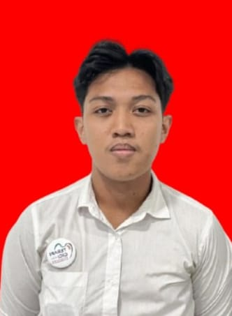

Halo, perkenalkan nama saya Muhammad Syahrun. Saya adalah seseorang yang memiliki semangat tinggi dalam belajar dan mengembangkan diri. Saya mempunyai hobi olahraga seperti futsal, badminton, sepak bola. Saya adalah mahasiswa aktif Universitas Hasanuddin Prodi Terapis gigi semester 4. Saya juga masuk organisasi yaitu HIMATERAGI UH berada pada divisi Ekonomi kreatif yang dimana tugas di bidang Ekonomi kreatif itu mengumpulkan dana sebagai keberlansungannya organisasi HIMATERAGI UH tersebut.